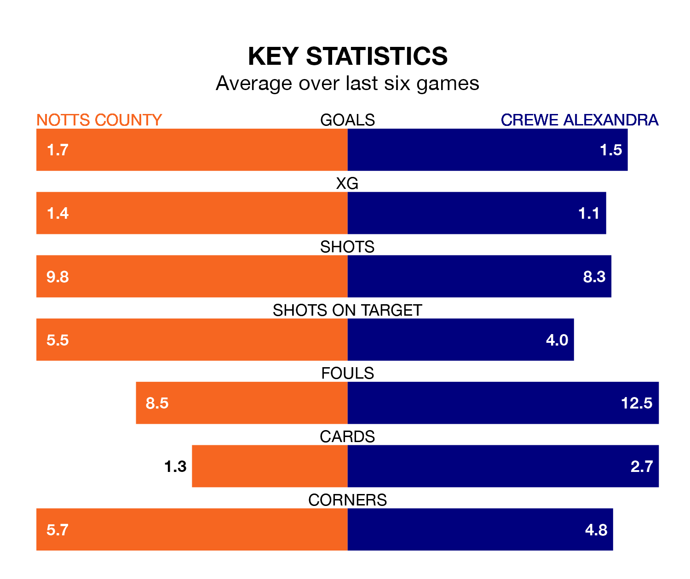

Saturday's match between Notts County and Crewe Alexandra promises to be one for the neutrals, as two of EFL League Two's most free-scoring sides go head-to-head.
Ahead of the game at Meadow Lane, County and the Railwaymen sit second and joint-fourth in the goal-scoring charts, with 65 and 59 goals respectively.
Striker Macaulay Langstaff leads the way for the home side, having bagged 22 goals in their 32 games to date.
And Elliot Nevitt has been the main man in the opponents' penalty box for Crewe, with 10 goals.
In the last 10 years, County and Crewe have played each other on 10 occasions. County won five of them, Crewe three, and they drew twice.
On average, County scored 1.7 goals and the Railwaymen 1.3 in those matches.
Their last meeting was on November 11, when Crewe won 1-0 at home.
Crewe are fourth in the table after 33 games, of which they have won 16 and drawn 10, earning 58 points.
County are six places behind the Railwaymen in 10th, with 14 wins and five draws putting them on 47 points.
The home side's Jodi Jones is the league's most creative player, racking up 19 assists in 29 appearances so far this season.
For the visitors, Mickey Demetriou has set up the most goals, having laid on six assists in 33 games.
County are in disappointing form in EFL League Two, with one win and two draws from their last six games.
With three wins and two draws over that period, Crewe's form is much better – they have taken 11 points from 18, compared to County's five.
County's last match was on February 17, a 1-0 loss against Wrexham.
Crewe drew 0-0 with Harrogate Town last time out, also on February 17.
Updated: 10:08 (UTC), 23/02/24